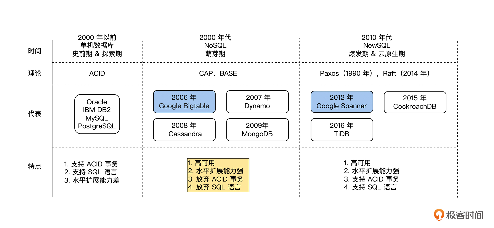

- 00 开篇词 掌握好学习路径，分布式系统原来如此简单.md.html
- 01 导读：以前因后果为脉络，串起网状知识体系.md.html
- 02 新的挑战：分布式系统是银弹吗？我看未必！.md.html
- 03 CAP 理论：分布式场景下我们真的只能三选二吗？.md.html
- 04 注册发现： AP 系统和 CP 系统哪个更合适？.md.html
- 05 负载均衡：从状态的角度重新思考负载均衡.md.html
- 06 配置中心：如何确保配置的强一致性呢？.md.html
- 07 分布式锁：所有的分布式锁都是错误的？.md.html
- 08 重试幂等：让程序 Exactly-once 很难吗？.md.html
- 09 雪崩（一）：熔断，让故障自适应地恢复.md.html
- 10 雪崩（二）：限流，抛弃超过设计容量的请求.md.html
- 11 雪崩（三）：降级，无奈的丢车保帅之举.md.html
- 12 雪崩（四）：扩容，没有用钱解决不了的问题.md.html
- 13 可观测性（一）：如何监控一个复杂的分布式系统？.md.html
- 14 可观测性（二）：如何设计一个高效的告警系统？.md.html
- 15 故障（一）：预案管理竟然能让被动故障自动恢复？.md.html
- 16 故障（二）：变更管理，解决主动故障的高效思维方式.md.html
- 17 分片（一）：如何选择最适合的水平分片方式？.md.html
- 18 分片（二）：垂直分片和混合分片的 trade-off.md.html
- 19 复制（一）：主从复制从副本的数据可以读吗？.md.html
- 20 复制（二）：多主复制的多主副本同时修改了怎么办？.md.html
- 21 复制（三）：最早的数据复制方式竟然是无主复制？.md.html
- 22 事务（一）：一致性，事务的集大成者.md.html
- 23 事务（二）：原子性，对应用层提供的完美抽象.md.html
- 24 事务（三）：隔离性，正确与性能之间权衡的艺术.md.html
- 25 事务（四）：持久性，吃一碗粉就付一碗粉的钱.md.html
- 26 一致性与共识（一）：数据一致性都有哪些级别？.md.html
- 27 一致性与共识（二）：它们是鸡生蛋还是蛋生鸡？.md.html
- 28 一致性与共识（三）：共识与事务之间道不明的关系.md.html
- 29 分布式计算技术的发展史：从单进程服务到 Service Mesh.md.html
- 30 分布式存储技术的发展史：从 ACID 到 NewSQL.md.html
- 春节加餐 技术债如房贷，是否借贷怎样取舍？.md.html
- 春节加餐 深入聊一聊计算机系统的时间.md.html
- 春节加餐 系统性思维，高效学习和工作的利器.md.html
- 结束语 在分布式技术的大潮流中自由冲浪吧！.md.html
- 捐赠
30 分布式存储技术的发展史：从 ACID 到 NewSQL
你好，我是陈现麟。
通过上节课的学习，我们明白了分布式在线业务系统是如何一步步从单体架构、SOA、微服务到 Service Mesh 的，这对于帮助我们理解 Service Mesh 为什么被设计为现在这个样子，并且为什么 Service Mesh 是一种更好的架构，给出了一个清晰的结论。
接下来，我们开始讨论本专栏另一个重点对象——分布式存储系统的演进历史。通过对这段历史的讨论和研究，从时间和历史的维度上，帮助你建立网状、立体的知识体系。
这一节课，我们主要讨论分布式存储系统中，分布式在线数据库的演进历史：从 ACID 到 NewSQL。与分布式业务系统的演进历史一样，我们也将分布式在线数据库的演进历史，梳理为史前期、探索期、萌芽期、爆发期和云原生期，这 5 个阶段来讨论和总结。
史前期与探索期
在 1990 年以前，互联网还没有被广泛使用，能连网的用户和设备非常有限，存储的数据量还在单机的承受范围之内。同时，由于 1970 年发布的 SQL 有表达能力强、面向集合和声明式等优良设计，所以在数据库中被广泛地使用，使得当时的在线数据库主要为单机的关系数据库，其中最著名的是 1979 年甲骨文发布的 Oracle 和 1983 年 IBM 发布的 DB2。所以，我们可以认为 1990 年以前为分布式在线数据库的史前期。
单机数据库非常大的一个优点是提供了一个非常完美的抽象，即 ACID 事务，让业务层可以专心去处理业务逻辑。关于事务，我们在第 22- 25 讲“事务”系列课程中非常详细地讨论过，这里就不再重复了。
但是，随着互联网的快速发展，用户量快速增长，单机数据库在存储容量和并发性能方面面临非常大的挑战，于是人们开始探索新的解决方案。
一种方案是从业务层面来解决单机数据库的问题，具体有如下两个操作方式。
一是，将业务垂直拆分为不同的逻辑单元，然后将不同逻辑单元上的数据库表，按数据容量和并发量等规则拆分到不同的数据库实例上。这种方法虽然可以大大扩展单机数据库的容量和性能，但是如果单个数据库表的数据非常大，那么分库就无法解决了。
二是，为了解决单表数据量非常大的问题，在业务上从一个表中，选择某一个字段为分片键，将其水平拆分为多个子表，这样每一个子表负责原表的一部分数据存储和读写。这种方法可以从更小的粒度对数据库进行扩容，但是对于非分片键的查询等操作是非常麻烦的。
对于这种方案，多个数据库实例之间并不需要相互感知，分库分表都是由业务来进行处理，所以只能称为单机数据库的集群模式，不能称之为分布式数据库。
另一种方案是从数据库层面解决单机数据库面临的问题，通过将数据库扩展为一个分布式数据库提升存储容量和性能，并且对业务来说，它依然和使用单机数据库一样使用分布式数据库。
正常来说，分布式数据库的解决方案需要提供和单机数据库一样的 ACID 事务，但是在分布式数据库中，数据被分片存储到数据库的多个节点上，事务操作不能在一个节点上完成，需要支持跨节点的分布式事务。
而这对于当时的计算机工程与理论水平来说，是一个非常大的挑战，于是在 1990 年代，工业界和学术界都进行了深入探索和实践，其中最有影响力的成果如下。
首先是 1990 年，著名的分布式理论科学家 Leslie Lamport 提出了 Paxos 算法。Paxos 是一个可以容错的共识算法，后来为分布式存储技术的发展提供了底层的共识基础，但是，在当时这是一颗被遗弃的明珠，并没有受到人们的重视。
接着是 1997 年的 BASE 理论和 2000 年的 CAP 理论，这两个理论直接将分布式数据库的发展推向了另一条道路：NoSQL ，在线数据库为了水平扩展能力而放弃了 ACID 事务。关于 BASE 理论和 CAP 理论，在课程第 3 讲“CAP 理论”中有详细的讨论，这里就不再重复了。
我们可以看出，1990 年代是分布式数据库的理论探索期，在这期间，Leslie Lamport 提出了一个可以容错的共识算法 Paxos 算法，这个算法是后来 NewSQL 的理论基础。而同在这一时期的 BASE 理论和 CAP 理论，则提供了另外的一个新选择，放弃 ACID 事务，选择了 NoSQL。
萌芽期
通过 1990 年理论上的探索后，BASE 理论和 CAP 理论深入人心，当时人们通过它们确定了分布式数据库的理论边界，于是放弃 ACID 事务的 NoSQL 数据库一时大放光彩。所以在 2000 年代这一时期，出现了非常多而且优秀的 NoSQL 数据库，下面我们来介绍几个著名的数据库。
首先是 2006 年，Google 发表了论文 “Bigtable: A Distributed Storage System for Structured Data” ，在这篇论文中，Google 对外分享了公司内部的分布式存储系统 Bigtable 的实现原理。Bigtable 在设计上有一个妥协，即只支持单行事务，不支持跨行事务。
接着在 2007 年，AWS 发表了论文“Dynamo: Amazon’s Highly Available Key-value Store”。这篇论文中，AWS 陈述了它们发现自己的很多业务场景，比如购入车场景，对数据库的关系型能力需求并不频繁，大约 70% 的操作都是键-值类操作，即仅使用一个主键，返回一个单行数据；大约 20% 的操作会返回一组行数据，但是也仍然位于单个表上，所以 AWS 重新设计了一个 Key-value 数据库 Dynamo。
同时由于 AWS 业务规模巨大，对系统的可扩展性和可用性有非常高的要求，所以 AWS 特别在论文中指出“可靠性是我们最重要的需求之一，因为即使是最微小的故障也会造成巨大的经济损失，而且会降低客户对我们的信任。”
基于上面的设计目标，Dynamo 采用了无主复制的数据复制策略，并且通过 Quorum 机制让业务根据自身的特点在读性能、写性能和可用性之间达成平衡。关于无主复制和Quorum 机制，在课程第 21 讲“无主复制”中有详细的讨论，这里就不再重复了。
总而言之，Dynamo 整体是一个非常优秀的技术方案，2008 年 Facebook 推出的 Cassandra 是 Dynamo 的一个开源实现。后来在 2009 年，10gen 公司（后改名为 MongoDB Inc ）推出了 MongoDB，它是一个文档型的数据库，简单来说是一个 Schemaless，数据即文档的数据库。
爆发期与云原生期
在 2010 年代，由于互联网公司数据的快速增长，人们接受了 BASE 理论和 CAP 理论，在数据库的架构设计方面，为了水平扩展能力和高可用性，放弃了数据的一致性，也就是在 CAP 里面选择了 AP 模型。可是我们在课程第 28 讲“共识与事务”中讨论过，要实现事务，底层多副本数据的复制模型必须是线性一致性的，所以 NoSQL 选择了 AP 模型，也就相当于放弃了事务。
在课程第 22 讲“事务的一致性”中我们已经详细讨论过，对于业务逻辑来说，事务提供了原子性、隔离性、持久性和一致性，这是一个非常好的抽象，所以工程师们非常希望自己使用的数据库是支持事务的。如果不支持事务的话，工程师为了保障业务逻辑的正确性，需要自己在业务逻辑层实现事务本身应该提供的保障。
比如，由于 Google 的 Bigtable 数据库只支持单行事务，不支持跨行事务，而业务中的跨行事务是很正常的逻辑，所以在 Google 里面使用 Bigtable 的工程师们，就只能在 Bigtable 之上构建自己的事务，这个过程是非常浪费时间并且很容易出现错误的。
而且在这一时期，人们对于分布式理论的认识、存储硬件和工程经验方面都有了长足的发展。在理论层面，Google 在 2006 年发布了分布式锁 Chubby 的论文 “The Chubby Lock Service for Loosely-Coupled Distributed Systems”，在论文中可以看到，人们已经充分认识到共识算法 Paxos 对于构建分布式系统的重要性了。
在硬件层面，SSD 磁盘已经普及，随机读写能力几乎高出 SATA 磁盘 3 个数量级。在工程经验层面，工程师们在 2000 年代就构建了大量的 NoSQL 系统，已经积累了关于构建一个分布式存储系统的丰富经验。
在这样的背景下，Google 于 2012 年发布了 Spanner 的论文 “Spanner: Google’s Globally-Distributed Database”，于 2013 年发布了 F1 的论文“F1: A Distributed SQL Database That Scales”，这两篇论文介绍了一个 Google 内部开发的支持外部一致性（External Consistency）的全球分布式关系数据库，直接宣告数据库行业进入了 NewSQL 时代。
Google 发布论文，开源界进行跟进是最近多年的一个规律，于是在 2015 年，开源界陆续推出了 NewSQL 数据库 CockroachDB 和 TiDB，所以我们认为 2010 年 - 2015 年为分布式数据库 NewSQL 的爆发时期。
从 2015 年开始，DBaaS （ DB as a Service ）的趋势越来越明显，据 AWS 的数据显示，用户在 2019 年迁移到 AWS 云上数据库的数量，超过了 2015 年到 2018 年的总数。DBaaS 也给分布式数据库提出了新的要求：分布式数据库需要能利用云的弹性等能力，来动态扩展自己的服务能力。从此，开启了分布式数据库的云原生时代。

总结
本节课中，我们讨论了分布式在线数据库的演进历史，现在一起来总结一下。
首先，是 1990 年以前的史前期，这个时期主要的架构形式是支持 ACID 事务的单机数据库。
然后，在 1990 年代的探索期，由于互联网的快速发展，单机数据库在存储容量和性能方面都面临非常大的挑战，所以人们开始探索新的解决方案：分库分表的集群方案和分布式数据库。
接着，是 2000 年代的萌芽期，人们接受了 BASE 理论和 CAP 理论，为了应对互联网的海量数据，人们为了水平扩展能力而放弃了 ACID 事务，这一时期出现了大量的 NoSQL 数据库。
由于业务层对事务的需求非常强烈，并且人们在工程能力和理论水平方面都在不断进步，所以在 2010 年 - 2015 年，分布式支持 ACID 事务的 NewSQL 数据库诞生，从此进入了 NewSQL 时代。
最后，是 2015 年 - 至今的云原生时代，这个时期最鲜明的特点是 DBaaS 和分布式数据库，能够利用云的弹性能力进行动态扩展。
到这里，我们可以看到，技术的发展是曲折前进的，在 1990 年以前的单机关系数据库就支持了 ACID 事务，但是到了 2000 年代，由于当时理论和工程水平的原因，许多 NoSQL 数据库为了水平扩展能力，而放弃了 ACID 事务，这就是一个非常大的权衡。
后来随着技术的发展，在 NewSQL 时代，既支持水平扩展，又支持 ACID 事务的分布式数据库终于出现了。所以，在技术的发展过程中，没有完美的架构，只有完美的 trade-off，取舍永远是最关键的因素。
思考题
结合本节课对分布式在线数据库的演进分析，请你来分享一下，你的公司所使用的数据库，并且说一说使用这一数据库时遇到了哪些问题？
欢迎你在留言区发表你的看法。如果这节课对你有帮助，也推荐你分享给更多的同事、朋友。
© 2019 - 2023 Liangliang Lee. Powered by gin and hexo-theme-book.